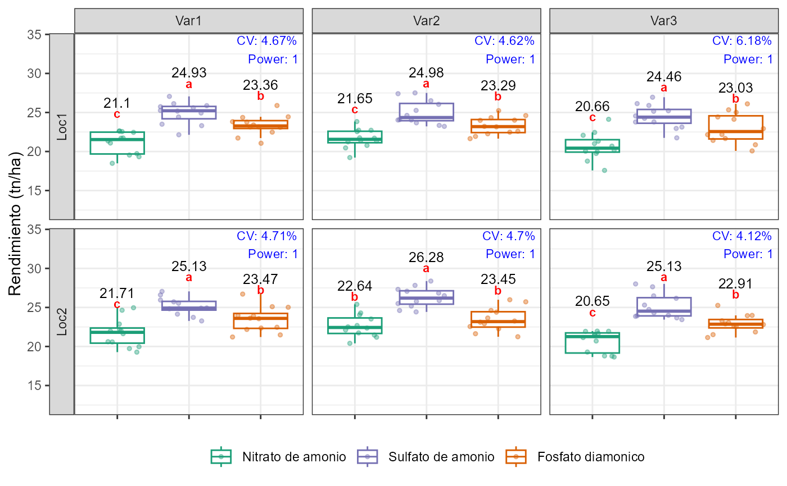

Esta funcion realiza analisis estadisticos por grupos definidos (clusteres) usando ANOVA y pruebas post-hoc (Duncan o Tukey), y genera un grafico tipo boxplot con etiquetas de medias, letras de significancia, coeficiente de variacion (CV) y potencia estadistica (Power).
agrobox(
data,
test = c("Duncan", "Tukey"),
factor,
factor2 = NULL,
orden_factor = NULL,
bloque = NULL,
variable,
niveles_factor = NULL,
titulo = NULL,
estructura = NULL,
lim_sup = NULL,
lim_inf = NULL,
colores = NULL
)Un data frame que contiene los datos.
Tipo de prueba post-hoc a usar: `"Duncan"` (por defecto) o `"Tukey"`.
Variable categorica principal (factor 1 o tratamiento).
(Opcional) Segundo factor para interaccion (usado en ANOVA).
(Opcional) Vector con el orden deseado para los niveles del `factor`.
(Opcional) Variable de bloque para disenos con bloques completos.
Variable numerica dependiente.
(Opcional) Etiquetas personalizadas para los niveles del `factor`.
Etiqueta para el eje Y del grafico (por ejemplo: "Altura (cm)").
(Opcional) Formula tipo `Grupo1 ~ Grupo2` para definir los clusteres.
(Opcional) Limite superior para el eje Y.
(Opcional) Limite inferior para el eje Y.
Vector de colores para los niveles del `factor`.
Una lista con:
Objeto `ggplot` con el grafico generado.
Niveles del factor utilizados.
# Ejemplo de un experimento factorial con bloques y estructura bifactorial
library(dplyr)
#>
#> Attaching package: 'dplyr'
#> The following objects are masked from 'package:stats':
#>
#> filter, lag
#> The following objects are masked from 'package:base':
#>
#> intersect, setdiff, setequal, union
library(tidyr)
library(ggplot2)
#> Warning: package 'ggplot2' was built under R version 4.5.2
set.seed(123)
# Diseno factorial con bloques (ej. 4 bloques por Localidad-Variedad)
df_experimento <- expand.grid(
Fertilizante = c("A", "B", "C"),
Dosis = c("Baja", "Media", "Alta"),
Localidad = c("Loc1", "Loc2"),
Variedad = c("Var1", "Var2", "Var3"),
Bloque = paste0("B", 1:4) # Bloques, no repeticiones
)
# Simular rendimiento (tn/ha) con efectos reales
df_experimento$tn_ha <- 20 +
ifelse(df_experimento$Fertilizante == "B", 2,
ifelse(df_experimento$Fertilizante == "C", 4, 0)) +
ifelse(df_experimento$Dosis == "Media", 1,
ifelse(df_experimento$Dosis == "Alta", 2, 0)) +
ifelse(df_experimento$Localidad == "Loc2", 0.5, 0) +
ifelse(df_experimento$Variedad == "Var2", 0.5,
ifelse(df_experimento$Variedad == "Var3", -0.5, 0)) +
rnorm(nrow(df_experimento), mean = 0, sd = 1.2)
# Ejecutar la funcion agrobox
agrobox(
data = df_experimento,
test = "Duncan",
factor = "Fertilizante",
factor2 = "Dosis",
orden_factor = c("A", "C", "B"),
bloque = "Bloque",
variable = "tn_ha",
niveles_factor = c("A" = "Nitrato de amonio",
"B" = "Fosfato diamonico",
"C" = "Sulfato de amonio"),
titulo = "Rendimiento (tn/ha)",
estructura = "Localidad~Variedad",
#se realizara un ANOVA y un TEST POST-HOC por cada grupo.
lim_sup = NULL, lim_inf = NULL,
colores = c("A" = "#1b9e77",
"B" = "#d95f02",
"C" = "#7570b3")
)$plot
